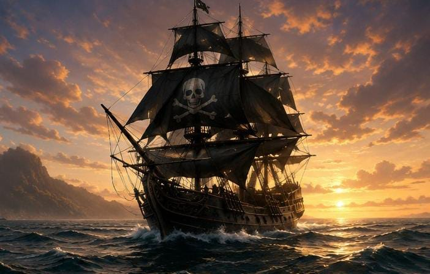
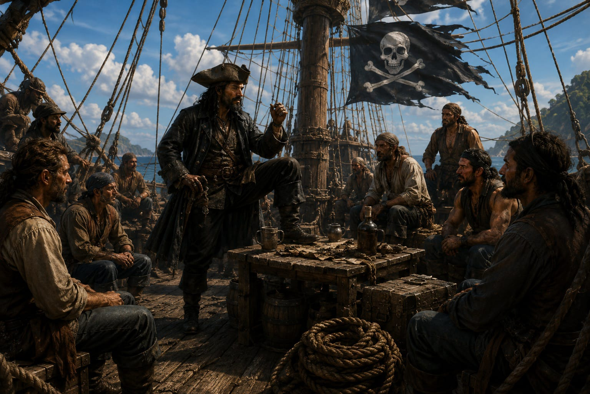
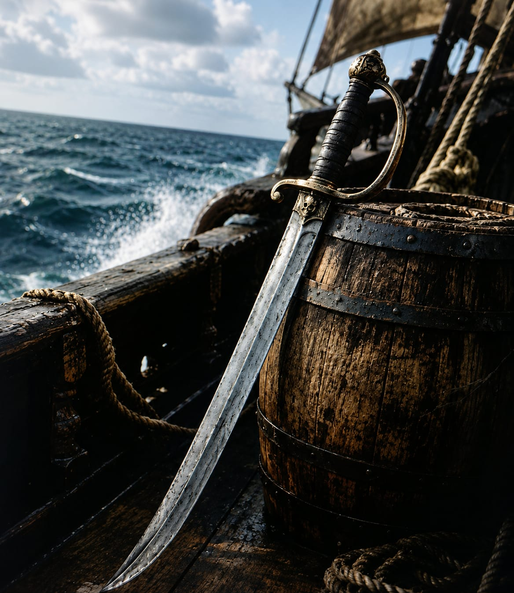
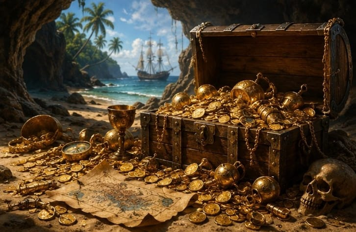

⚓ A Era de Ouro da Pirataria

A Era de Ouro da Pirataria foi um período que ocorreu aproximadamente entre 1650 e 1730, quando os piratas dominaram diversas rotas marítimas ao redor do mundo. Durante essa época, os mares do Caribe, do Oceano Atlântico e da costa africana tornaram-se palco de inúmeros ataques a navios mercantes carregados de riquezas.
Muitos piratas eram antigos marinheiros que enfrentavam condições difíceis de trabalho e viam na pirataria uma oportunidade de ganhar mais dinheiro e conquistar certa liberdade. Embora a vida pirata seja frequentemente retratada como uma grande aventura, a realidade era muito mais perigosa. Tempestades, doenças, batalhas e perseguições constantes faziam parte da rotina desses navegadores.
Foi nesse período que surgiram figuras lendárias como Barba Negra e outros capitães que ficaram famosos por suas estratégias e ousadia. A Era de Ouro da Pirataria chegou ao fim quando governos e marinhas passaram a combater os piratas com maior eficiência, tornando os mares mais seguros para o comércio.
🚢 Vida a Bordo de um Navio Pirata

Viver em um navio pirata estava longe de ser o conforto que muitos filmes mostram. Os tripulantes passavam semanas ou até meses no mar, enfrentando calor intenso, tempestades e pouca comida fresca. O cardápio geralmente era composto por biscoitos duros, carne salgada e água que nem sempre permanecia própria para consumo.
Apesar das dificuldades, os navios piratas possuíam algumas características incomuns para a época. Muitos grupos adotavam regras próprias, conhecidas como códigos piratas, que determinavam a divisão dos tesouros e os deveres de cada integrante da tripulação. Em alguns casos, os piratas tinham até mais direitos e participação nas decisões do que marinheiros comuns.
A convivência em espaços apertados exigia disciplina e cooperação. Afinal, passar meses no mesmo navio sem internet, televisão ou qualquer entretenimento moderno certamente exigia muita paciência de todos os envolvidos.
🗡️ Armas e Estratégias dos Piratas

Os piratas utilizavam diversas armas para realizar seus ataques. Entre as mais comuns estavam espadas, pistolas de pederneira, facas e canhões instalados nos navios. O objetivo principal não era destruir a embarcação inimiga, mas dominá-la rapidamente para capturar suas mercadorias.
Uma das estratégias mais utilizadas era aproximar-se discretamente de navios mercantes e surpreender a tripulação. Muitas vezes, apenas a presença da bandeira pirata já era suficiente para fazer os marinheiros se renderem sem lutar. Isso acontecia porque a fama dos piratas era tão assustadora quanto suas armas.
Além da força, a inteligência também desempenhava um papel importante. Os capitães estudavam rotas comerciais e escolhiam cuidadosamente seus alvos. Dessa forma, aumentavam as chances de sucesso e reduziam os riscos durante os confrontos.
💰 Tesouros e Lendas Piratas

Os tesouros escondidos são uma das imagens mais famosas associadas aos piratas. Graças a livros, filmes e histórias populares, muitas pessoas imaginam baús cheios de ouro enterrados em ilhas desertas, marcados por mapas com um grande "X". No entanto, a realidade era um pouco diferente.
A maior parte dos piratas preferia gastar rapidamente suas riquezas em vez de enterrá-las. Além disso, há poucos registros históricos que comprovem a existência de grandes tesouros escondidos. Mesmo assim, algumas histórias e lendas sobreviveram ao longo dos séculos e continuam despertando a imaginação de aventureiros e pesquisadores.
Essas narrativas contribuíram para transformar os piratas em personagens quase míticos. Até hoje, a ideia de encontrar um tesouro perdido desperta curiosidade e inspira filmes, livros, jogos e inúmeras histórias de aventura. Afinal, quem nunca sonhou em encontrar um baú cheio de ouro durante uma caminhada na praia? Embora as chances sejam pequenas, a imaginação continua navegando pelos mares da fantasia.